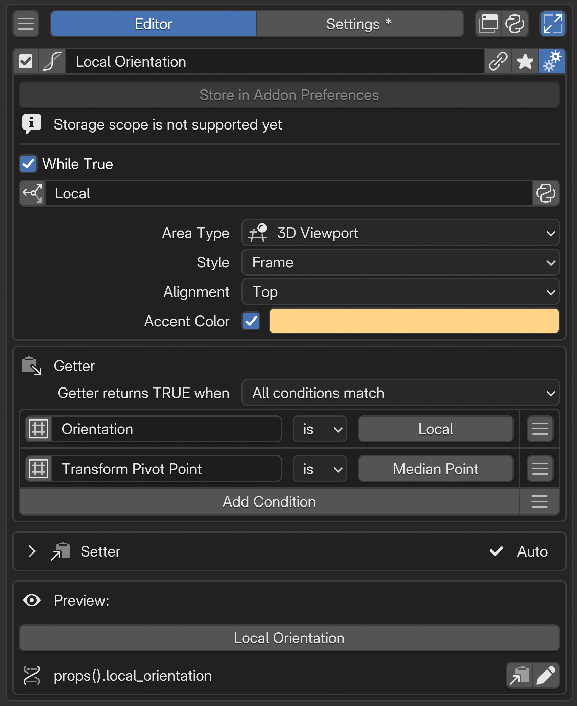

Property Stack Editor¶
Property Stack は、複数の Blender の設定を「この作業状態になっているか」という一つの判定にまとめるエディターです。Getter で現在の状態を読み、Setter で必要な設定をまとめて変更します。判定だけを使うこともできます。
Added in version 2.1: 複数条件の判定と設定の切り替えを組み合わせる Property Stack を追加。
構成ガイド — 状態の判定と変更を組み立てる（AI 向け）
呼び名：Property Stack／種別 ID：CONDITION。 複数条件から現在の真偽値を求め、対応する設定変更を一つのスイッチにまとめます。単純な値の定義には Property、条件で呼び出し先を選ぶ場合は Context Router を使います。
Getter：RNA プロパティ、PME Property、別の Property Stack などを条件に使い、すべて／いずれかの一致で判定します。
Setter：Getter の条件から作られる書き込み行を使います。Getter への参加と Setter の有効状態を分け、判定だけに使う条件は Setter を Off にします。折りたたみは表示の切り替えで、書き込みの無効化ではありません。
書き込みの意味：TRUE / FALSE の指定に対応する値を書き、表示は再び Getter で求めます。通常の数値・文字列・単一 Enum は既定で TRUE 側だけ、Boolean の Auto と複数選択 Enum の Add / Remove は両側に作用します。FALSE は以前の値の復元ではありません。
成立の保証：All / Any は Getter の結合方法です。Any にしても Setter が一つの行を選ぶわけではなく、有効な書き込み行が対象です。判定専用の条件や異なる手動値がある場合、書き込み後も Getter が TRUE になるとは限りません。
書き込み可否：Read-only、Need、対象の取得失敗を分けます。有効な行に未解決の問題がある場合、事前確認で書き込み全体が止まります。Auto / Set は値の準備状態で、実行時の成功保証ではありません。
配置：別のメニューの Menu タブから参照し、スイッチとして使えます。スクリプト用のパスは Preview でコピーし、表示名から生成しないでください。
用途：複数の表示設定を一括切り替え／複数条件が揃った状態を表示／While True HUD で状態を通知。
入力上限：Getter は最大 128 条件、Setter は最大 128 行。
パスや比較だけで表せない判定：PME Property の Getter で計算した値を、条件スロットの Menu タブから参照します（保存先は Addon Preferences）。Getter のみでも条件に使えます。他の条件と組み合わせる必要がなければ、PME Property 単独の表示・操作で完結できます。使い分けを参照してください。
制約：通常の Command スロットを上から順に実行する Macro とは異なります。独立したホットキーで処理を実行する前提にしません。書き込み不能な対象や欠けた参照は診断を確認します。
判定は Getter、変更は Setter、色や表示先は While True HUDへ。
画面と編集の流れ¶
 N名前と基本操作設定の組み合わせの名前や有効状態を確認します。
1Getter現在の状態を判定する条件を組み合わせます。
2Setter操作時に書き込む値と、行ごとの有効状態を設定します。
3Preview組み立てたスイッチの表示と操作を確かめ、参照パスをコピーします。
AAdvanced settings詳細設定を開き、While True による通知などを設定します。
N名前と基本操作設定の組み合わせの名前や有効状態を確認します。
1Getter現在の状態を判定する条件を組み合わせます。
2Setter操作時に書き込む値と、行ごとの有効状態を設定します。
3Preview組み立てたスイッチの表示と操作を確かめ、参照パスをコピーします。
AAdvanced settings詳細設定を開き、While True による通知などを設定します。
Getter と Setter の関係¶
チェックボックスを見れば、今オンかどうかが分かります。クリックすれば、設定を変えられます。この「見る」と「変える」を、それぞれ担当するのが Getter と Setter です。
Getter は、今の状態を見せる役。 Blender の値を読み、条件に合っているかをチェックの有無で表示します。
Setter は、操作を受けて設定を変える役。 クリックに応じて、指定した値を Blender に書き込みます。
たとえば、X-Ray と Wireframe を一つのスイッチにまとめます。両方がオンならチェックが付くのが Getter、スイッチを押すと両方の設定が変わるのが Setter です。ほかの場所で X-Ray をオフにすれば、Getter がその変化を読み取り、チェックも外れます。
一つのプロパティを扱うウィジェットと同じように、Property Stack では 複数のプロパティの組み合わせを、一つの状態として扱えます。 Getter でその状態になっているかを確認し、Setter で必要な値をまとめて設定します。あちこちに分かれた設定を、一つのスイッチから確認・変更できます。
名前と基本操作¶
名前はこの設定の組み合わせを識別する表示名です。スクリプトで参照する Property ID とは分けて扱います。共通の 選択メニューの設定を参照してください。
Getter — 現在の状態を判定する¶
Add Condition で条件を追加し、参照する値・比較方法・比較値を指定します。右端のメニューには、モードやオブジェクトの種類などのプリセットがあります。スロット名は条件を見分けるための表示名です。
Getter の比較値を編集しても、Blender の値は書き換わりません。 「現在の値がこの条件に合うか」を判定するための設定です。
判定方法 |
用途 |
|---|---|
All conditions match |
複数の設定がすべて目的の値になっていることを表示する |
Any condition matches |
一つ以上の条件が一致していることを表示する |
判定に参加するのは、有効で設定が完了した条件です。参加する条件が一つもなければ FALSE になります。条件を無効にすることと、「値が False か」を調べることは別の操作です。
数値・文字列・Enum・ベクトルの成分など、対象の型に合う比較を使います。比較方法は Context Router と共通です。型ごとの一覧は 比較方法と比較値を参照してください。
読み取りと書き込みの可否
読み取り専用のプロパティも、値を取得できれば Getter に使えます。たとえば現在のモードを判定しても、それだけでモードを変更する Setter は作れません。
対象を取得できない条件は一致しません。「False である」「一致しない」という比較でも、取得失敗を一致として扱いません。
C.space_dataなどは、評価するエディターによって参照先と利用できるプロパティが変わります。型の指定はパスの解釈に使う情報で、エディターの切り替えではありません。読み取りと書き込みの両方を、実際に使う場所で確認します。
プロパティパスだけでは表せない値や判定
複数のデータを集計する、値を計算するなど、パスの参照だけでは表せない処理には、通常の PME Property を使います。Getter に Python で処理を書き、Boolean・数値・Enum などの一つの値として返せます。
一つの値の表示・操作で足りる場合：PME Property をそのまま使います。別メニューの Menu タブから参照してウィジェットを配置できます。独自の書き込み処理が必要なら、PME Property の Setter を設定します。
分岐や他の条件と組み合わせる場合：条件スロットの Menu タブで PME Property を参照し、返された値を比較します。Context Router では行き先の選択に、Property Stack では Getter の状態判定に使えます。
条件からリンク参照する PME Property は、保存先を Addon Preferences にします。Getter のみの読み取り専用プロパティも条件に使えます。戻り値の型と、対象がない場合に返す値を決めてください。設定方法は Property Editor の Getter / Setter を参照してください。
Setter — 条件に対応する変更を決める¶
Setter には、Getter の条件に対応する書き込み行が並びます。左のチェックボックスで書き込みに参加する行を選び、中央で書き込む値、右側で準備状態を確認します。 Setter 見出しの三角は、これらの行を展開・折りたたみます。閉じても書き込みは無効になりません。
Auto / Set / Need / Off / Read-only¶
表示 |
意味 |
設定すること |
|---|---|---|
Auto |
Getter の条件から書き込む値が決まっている |
対象と値を確認する。例： |
Set |
手動で書き込む値や方法を指定している |
その値で目的の条件を満たせるか確認する |
Need |
書き込む値を指定する必要がある |
値を入力するか、判定専用ならその Setter 行を Off にする |
Off |
この行は書き込まない |
必要ならチェックボックスで有効にする。Getter の判定には引き続き使える |
Read-only |
この参照先への直接の書き込みが認められていない |
Getter の条件として使う。Setter のチェックボックスでは解除できない |
たとえば > 10 は、11 でも 20 でも成立します。Getter には十分な条件ですが、Setter には具体的な値が必要なので Need になります。20 を指定すると Set になります。
Setter 見出し右側の表示は、行の状態の要約です。たとえば Off は全行が Off、Need は値が必要な行があることを示します。Property Stack の現在の TRUE / FALSE は Preview で確認します。
判定だけに使う・書き込みも使う¶
Getter の条件 |
対応する Setter |
動作 |
|---|---|---|
有効・設定済み |
Auto / Set で有効 |
判定に使い、操作時には値も書き込む |
有効・設定済み |
Off / Read-only |
判定にだけ使う |
有効・設定済み |
Need |
判定はできるが、書き込みには値の指定が必要 |
無効 |
Off |
判定から外し、対応する書き込みも止める |
「Object Mode である」を判定に残し、変更したい表示設定だけを書き込む、といった組み合わせができます。Setter を全行 Off にすれば、状態の表示や While True HUD のための判定として使えます。
Setter だけを Off にすると、Getter の条件は変わりません。もう一度有効にすると、その条件と保持されている設定に応じて Auto / Set / Need になります。
Getter の条件を無効にすると、対応する Setter も Off になります。再び判定に加えるときは Setter の状態も確認します。手動で Off にしていた書き込みは、Getter を有効にし直しても Off のままです。
PME Property / 別の Property Stack をリンクした条件の Setter は、初期状態では Off です。有効にした場合も、実際に書けるかはリンク先の設定で決まります。Getter のみの PME Property は判定に使えますが、書き込みにはリンク先の Setter が必要です。
TRUE / FALSE を指定すると何を書き込むか¶
以下は標準の書き込み設定です。Off の行は、どちらを指定しても変更しません。
Setter の種類 |
TRUE の指定 |
FALSE の指定 |
|---|---|---|
Boolean の Auto |
Getter が一致する値。 |
その反対の値 |
数値・文字列・単一 Enum などの値（手動設定した Boolean を含む） |
指定した値 |
変更しない |
複数選択 Enum の Add |
指定した候補を追加 |
同じ候補を除去 |
複数選択 Enum の Remove |
指定した候補を除去 |
同じ候補を追加 |
複数選択 Enum の Replace |
選択全体を指定した候補に置き換える |
変更しない |
書き込み後も、表示は Getter で決まる
All / Any は判定の組み合わせ方です。Any でも、Setter が一つの条件を選んで書くわけではありません。有効な書き込み行が対象になります。
書かない条件は、そのまま判定に残ります。 たとえば Object Mode という条件が一致していなければ、表示設定を書き換えても All の結果は FALSE のままです。手動の書き込み値も、Getter の比較値とは別に確認します。
FALSE は元の状態への復元ではありません。 たとえば Add の逆操作は候補の除去です。その候補が操作前から含まれていたかを記憶して戻す処理ではありません。
独自の計算や書き込み手順が必要なら、PME Property の Getter / Setter に処理を定義して参照できます。PME Property との使い分けも参照してください。
Preview / Property ID¶
Preview は現在の判定結果を表示し、設定した切り替えを確認する入口です。
表示 |
書き込みの状態 |
|---|---|
Toggle: available |
TRUE 側・FALSE 側の両方に書き込みがある。すべての行が両方向に書くとは限らない |
Toggle: TRUE only |
TRUE 側だけに書き込みがある。FALSE 側では値を変更しない |
Toggle: unavailable |
利用可能な書き込みがない、または準備が整っていない。続く理由を確認する |
Need や解決できない参照などが有効な Setter 行に残ると、事前確認で書き込み全体が止まります。 値や参照先を直すか、書き込みが不要な行を Off にします。Getter で値が読めることと、Setter で書けることは別々に確認してください。
Auto / Set や Toggle の表示は、実行時の成功を保証するものではありません。実行中に一部の書き込みが失敗しても、それまでの変更がまとめて元に戻るとは限りません。
Property ID の編集と Lock、参照パスのコピーもここで行います。
Added in version 2.1: 表示名と、スクリプトから参照する Property ID を分けて管理します。
ID の文字制限と Lock は Property IDを参照してください。名前を後から変更する予定がある場合も、スクリプトの参照を維持するかを決めておきます。
組み立てた設定を確認する¶
条件がすべて成立する状態、一部だけ成立する状態、対象が存在しない状態を確認します。Setter を使う場合は、真の側・偽の側でどの値が変わり、どの行が何もしないかを確認します。
Advanced settings¶

名前行の右端にある詳細設定ボタンから開きます。保存先の案内と While True の通知設定があります。保存先は Store in Addon Preferences の固定表示で、Property Editor のように Scene / Object へ切り替える設定ではありません。通知メッセージは固定文、または return で文字列を返す Python コードで指定できます。
While True HUD — 条件を満たす間の通知¶
Added in version 2.1: 条件を満たしている間、指定したエディターにメッセージや枠を表示できます。
While True を有効にし、メッセージと表示先を設定します。
Area Type：通知を表示するエディター。
Style / Alignment：表示方法と配置。
Accent Color：色の使用と通知色。
色付きの例では、どの状態を通知しているかを Getter で確認してから、メッセージや色を調整します。通知を表示する場所と、条件が参照するデータの場所を同じものだと仮定しないでください。